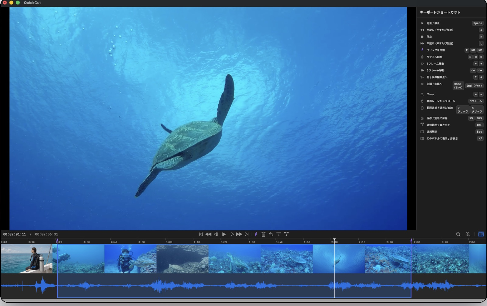
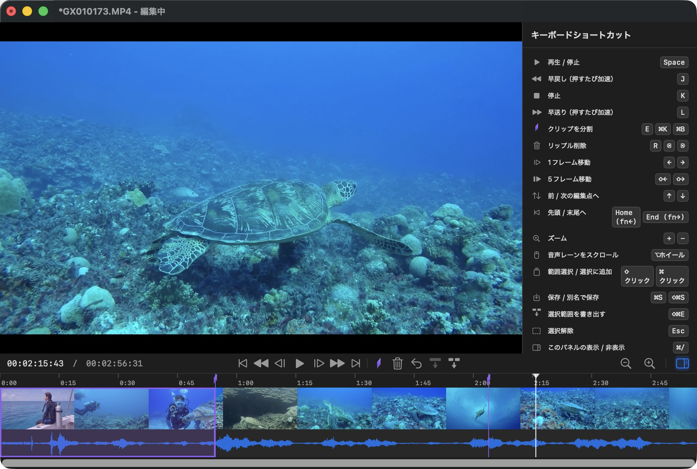

QuickCut for Mac
動画を切るだけに重い編集ソフトはいらない
開いてすぐ切って無劣化のまま保存
対応形式: mp4 / mov / mkv（配信録画もそのまま）


書き出し20回までは、全機能を無料で利用できます。それ以降はApp内課金「QuickCut Unlimited」（¥1,800・買い切り）で、書き出し回数が無制限になります。月額料金はありません。
QuickCut for Mac
Just cutting a video? You don’t need a full-blown editor.
Open, cut, and save. Nothing gets re-encoded.
Formats: MP4 / MOV / MKV (stream recordings too)


Use every feature free for your first 20 exports. When you need more, a one-time in-app purchase of “QuickCut Unlimited” unlocks unlimited exports. No subscription.
QuickCut for Mac
QuickCut for Mac
Nur ein Video kürzen? Dafür braucht es kein Schnittprogramm.
Öffnen, schneiden, sichern. Ohne Neucodierung.
Formate: MP4 / MOV / MKV (auch Stream-Aufnahmen)
Alle Funktionen sind für die ersten 20 Exporte kostenlos. Danach schaltet der einmalige In-App-Kauf „QuickCut Unlimited“ unbegrenzte Exporte frei. Kein Abo.
QuickCut for Mac
QuickCut for Mac
Para cortar un vídeo no hace falta un editor completo.
Ábrelo, corta y guarda. Nada se recodifica.
MP4 / MOV / MKV, grabaciones de streaming incluidas
Usa todas las funciones gratis en tus primeras 20 exportaciones. Cuando necesites más, la compra única dentro de la app “QuickCut Unlimited” desbloquea exportaciones ilimitadas. Sin suscripción.
QuickCut for Mac
QuickCut for Mac
Juste couper une vidéo ? Pas besoin d’un logiciel de montage.
Ouvrez, coupez, enregistrez. Sans réencodage.
Formats : MP4 / MOV / MKV (enregistrements de stream inclus)
Utilisez toutes les fonctions gratuitement pour vos 20 premières exportations. Ensuite, l’achat intégré unique « QuickCut Unlimited » débloque les exportations illimitées. Sans abonnement.
QuickCut for Mac
QuickCut for Mac
Per tagliare un video non serve un editor completo.
Apri, taglia e salva. Niente ricodifica.
MP4 / MOV / MKV, registrazioni di streaming comprese
Usa tutte le funzioni gratis per le prime 20 esportazioni. Quando ti serve di più, l’acquisto una tantum in-app “QuickCut Unlimited” sblocca esportazioni illimitate. Nessun abbonamento.
QuickCut for Mac
QuickCut for Mac
동영상 자르기에 무거운 편집 프로그램은 필요 없습니다
열어서 자르고 저장. 재인코딩은 하지 않습니다
지원 형식: MP4 / MOV / MKV(방송 녹화본도 그대로)
처음 20회 내보내기까지는 모든 기능을 무료로 이용할 수 있습니다. 더 필요할 때는 앱 내 일회성 구입 “QuickCut Unlimited”로 내보내기 횟수가 무제한이 됩니다. 구독은 없습니다.
QuickCut for Mac
Cortar um vídeo não exige um editor completo.
Abra, corte e salve. Nada é recodificado.
MP4 / MOV / MKV, inclusive gravações de lives
Use todos os recursos de graça nas primeiras 20 exportações. Quando precisar de mais, a compra única dentro do app “QuickCut Unlimited” libera exportações ilimitadas. Sem assinatura.
QuickCut for Mac
前 20 次导出可免费使用所有功能。需要更多时，通过一次性 App 内购买“QuickCut Unlimited”即可解锁无限次导出。无需订阅。
QuickCut for Mac
只是剪一段影片，不需要笨重的剪輯軟體。
打開、剪、儲存。不重新編碼。
格式：MP4 / MOV / MKV（直播錄影也能開）
前 20 次匯出可免費使用所有功能。需要更多時，透過一次性 App 內購買「QuickCut Unlimited」即可解鎖無限次匯出。不用訂閱。
QuickCut for Mac